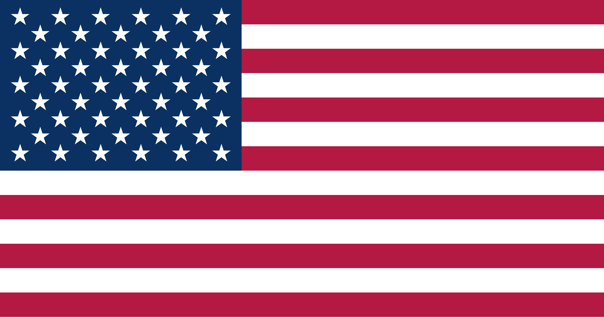
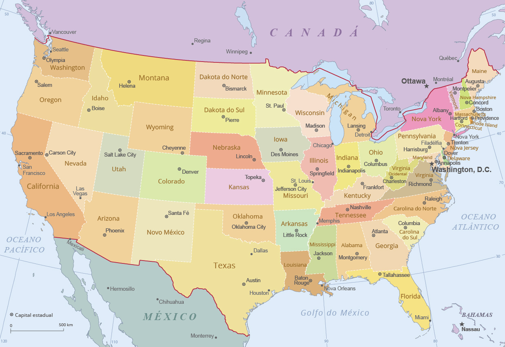
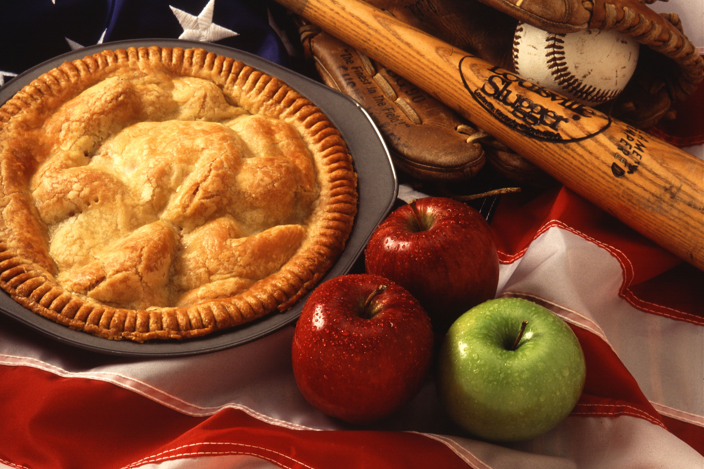
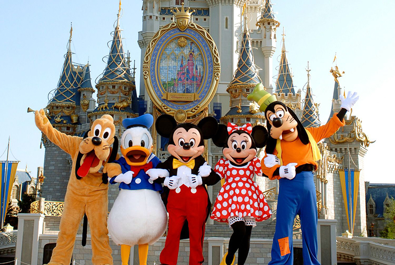
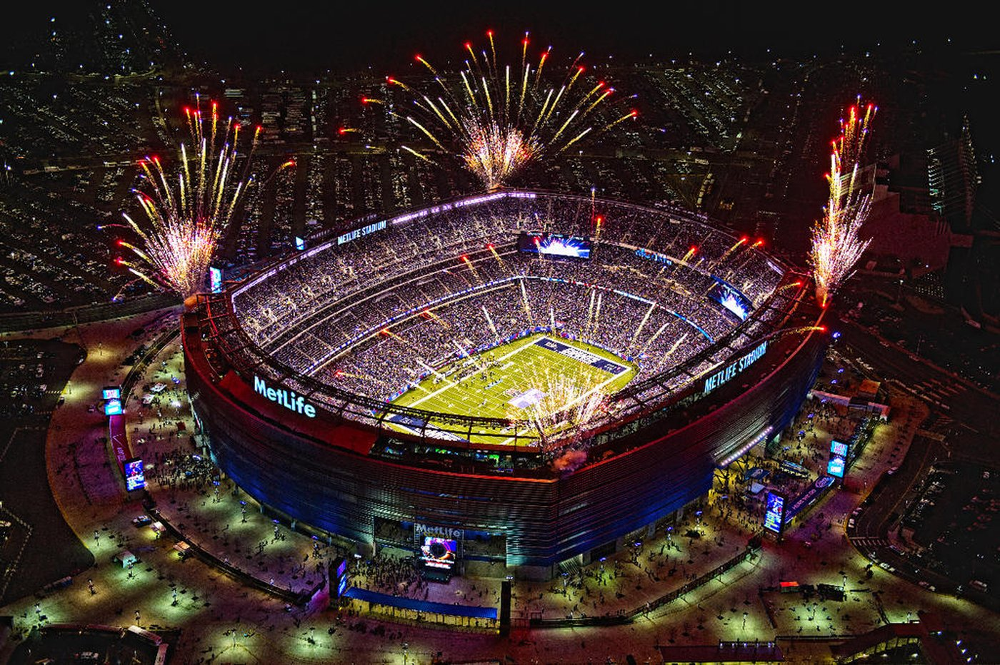
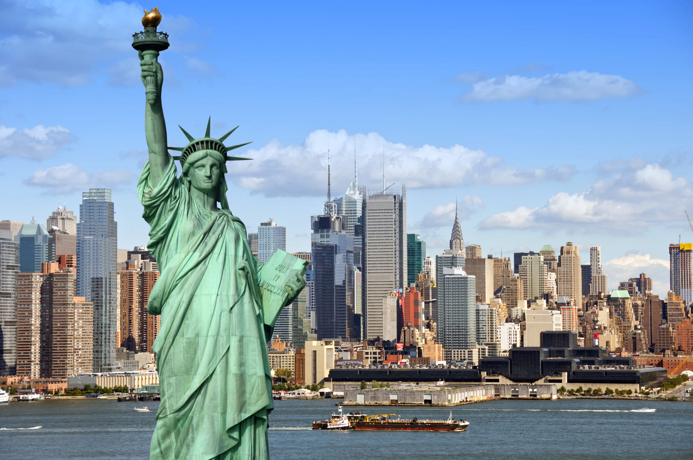
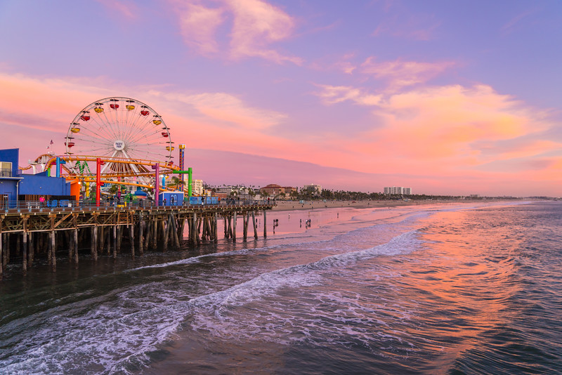
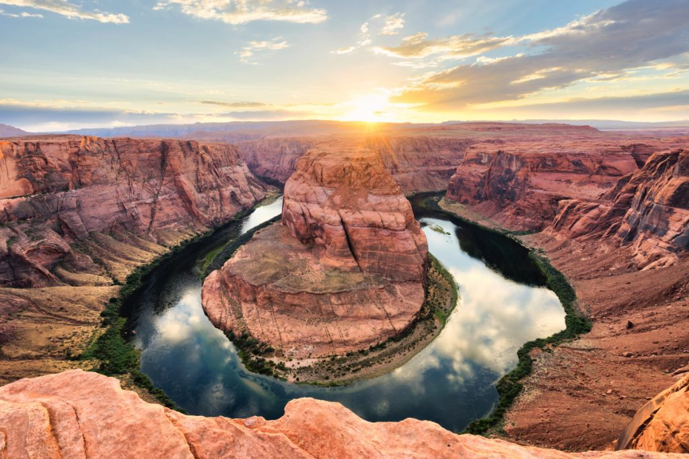

Sobre o País
Os Estados Unidos situam-se na América do Norte e destacam-se como a maior economia global. Sua capital é Washington, D.C., e o país conta com uma população superior a 330 milhões de habitantes, sendo mundialmente reconhecido por sua influência cultural, tecnológica e econômica.
Mapa do País

Dados Geográficos
- Capital: Washington, D.C.
- Continente: América do Norte
- Área: 9.371.175 km²
- População: cerca de 349 milhões de habitantes
- Idioma: Inglês
- Moeda: Dólar Americano (USD)
Cultura e Tradições
A cultura estadunidense é um mosaico global formado pela imigração. É definida pelo espírito empreendedor, pela valorização do individualismo e pela enorme influência de sua indústria de entretenimento, como Hollywood, a música pop e os parques temáticos, que influenciam costumes em todo o mundo.



Infraestrutura para Eventos
Os Estados Unidos contam com centros de convenções de ponta, estádios modernos e uma excelente infraestrutura logística. Com aeroportos internacionais e hotéis de grande capacidade, o país recebe alguns dos maiores eventos esportivos, culturais e corporativos do mundo.

Pontos Turísticos
Os Estados Unidos oferecem destinos icônicos como a Estátua da Liberdade, as praias da Califórnia, o Grand Canyon e os parques da Disney. Suas atrações combinam grandes centros urbanos com paisagens naturais impressionantes, atraindo milhões de turistas todos os anos.


